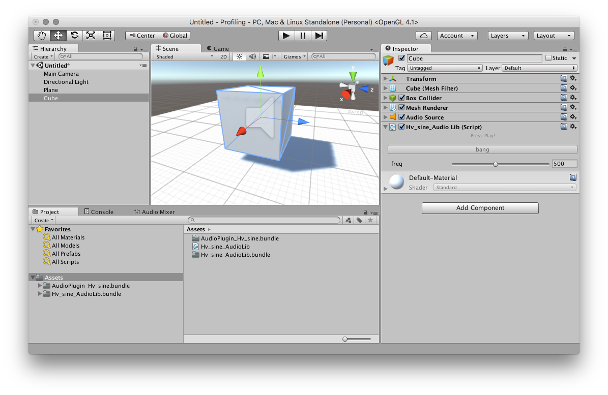
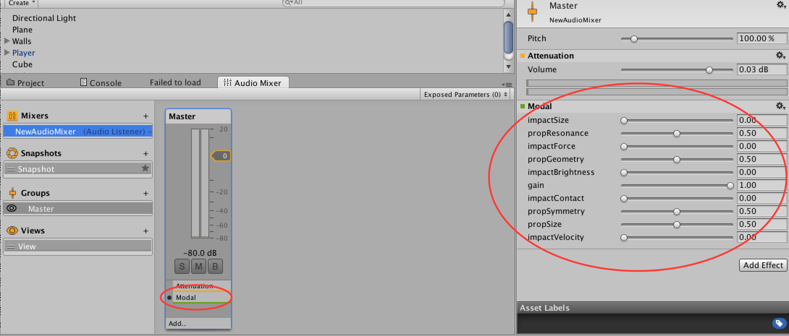
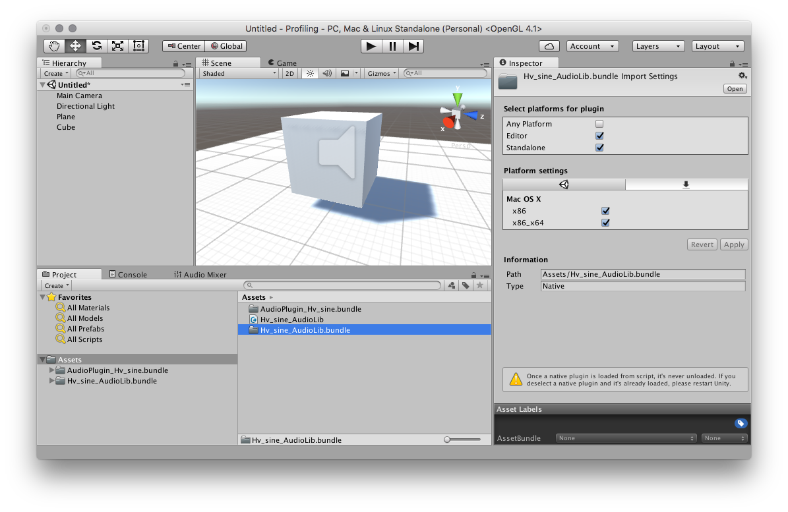
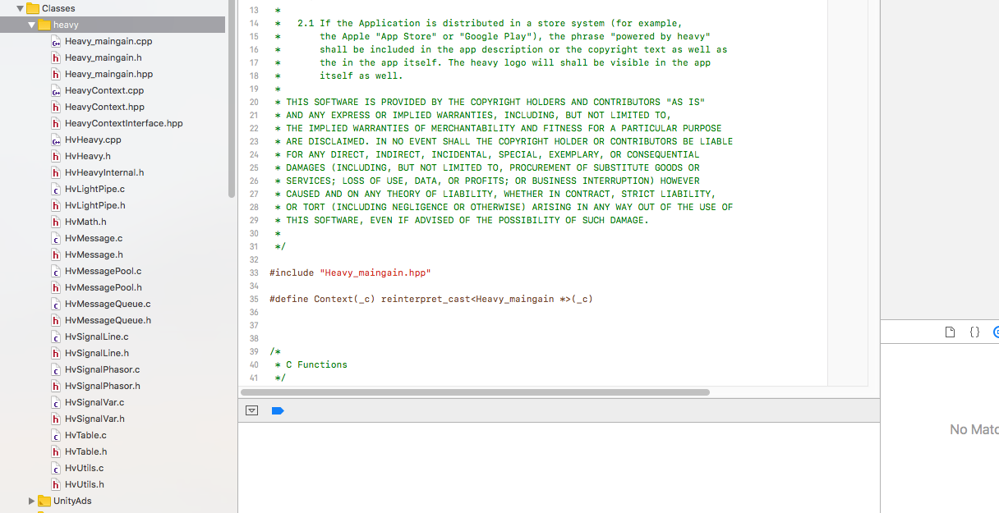

Unity
Getting Started
Heavy can generate both Native Unity Audio Libraries with a C# scripting interface and Unity 6 Audio Mixer Plugins. Both have the same sound output but slightly different use cases within Unity.
Audio Libs
Audio Libs are platform-specific native libraries. The C code generated by the patch is compiled into a binary and a C# interface is provided for access. You can attach this C# script to GameObjects within your scene in order for the sound to be spatially processed within the game world. These plugins can also act as a filter for AudioSource components when stacked together on a particular GameObject.
The below image shows an example of a Heavy generated plugin Hv_sine_AudioLib attached to a cube object.

Audio Plugins
The Audio Mixer in Unity allows you to bus audio sources for mixing, effects processing and mastering. Plugins for the Audio Mixer have the filename prefix AudioPlugin. Any that exist within the Assets folder and its subdirectories will be found by Unity. They are available to add to the mixer group, taking the patch name that is passed when generated.
In the image below the AudioPlugin_Hv_Modal has been added and the parameters are shown on the right hand side.

For more information on exposing parameters to audio mixer plugins and accessing them in scripts check out this Unity tutorial.
Installing a plugin
When it comes to adding plugins to your project the best practice is to create a folder within the Assets directory called Plugins. For cross-platform games it might also be useful to create platform specific subdirectories to organise each binary, for example: Assets/Plugins/x86, Assets/Plugins/x64, Assets/Plugins/WSA/x86, etc...
Each compiled target will contain the following files (OSX plugins have the .dylib extension, on Windows it's .dll and on Linux .so):
Hv_{PATCH_NAME}_AudioLib.cs- Native Plugin C# interfaceHv_{PATCH_NAME}_AudioLib- Native Plugin dll / bundleAudioPlugin_Hv_{PATCH_NAME}- Audio Mixer Plugin dll / bundle

Ensure that the platform settings have been applied to each plugin binary you wish to use and that paths are correct. x86 corresponds to 32-bit platforms and x86_x64 is for 64-bit platforms.
When building for mobile devices it's generally best to download the plugin target for your development platform (windows/macos) and the device platform (ios/android). The development platform plugins will allow testing in the Unity editor and standalone builds. See the Android/iOS specific instructions below for more information.
Note: Unity has to be restarted each time the plugin file changes on the local hard disk.
Exposing and Setting Parameters
Each exposed parameter will automatically generate a parameter in the Unity Editor interface. These parameters can be scripted easily from elsewhere in your project.
public class MyAudioLibController : MonoBehaviour {
void Start () {
Hv_example_AudioLib script = GetComponent<Hv_example_AudioLib>();
// Get and set a parameter
float freq = script.GetFloatParameter(Hv_example_AudioLib.Parameter.Freq);
script.SetFloatParameter(Hv_example_AudioLib.Parameter.Freq, freq + 0.1f);
}
}
Exposing and Sending Events
Exposed events are a way to generate triggers or 'bangs' into your patch. Adding one will automatically generate a button in the Unity Editor interface. These events can be scripted easily from elsewhere in your project.
The event receiver in the patch will generate a 'bang' message each time it is fired. These can be useful for example, triggering synth notes from a Unity based sequencer or aligning a procedural gunshot sound to point at when it is fired.
public class MyAudioLibController : MonoBehaviour {
void Start () {
Hv_example_AudioLib script = GetComponent<Hv_example_AudioLib>();
script.SendEvent(Hv_example_AudioLib.Event.Bang);
}
}
Sending messages back to Unity
Any output parameter in the patch can be routed back into Unity.
A C# delegate can be attached to the native plugin wrapper script that listens for callbacks when these messages are triggered.
The FloatMessage object contains a property receiverName to determine the origin and the value property contains the actual float value contained in the message.
For example, if 0.5 is sent to [s #toUnity @hv_param], then message.receiverName will contain #toUnity and message.value will contain 0.5.
Example:
public class MyMessageDelegate : MonoBehaviour {
void Start () {
Hv_sine_AudioLib script = GetComponent<Hv_sine_AudioLib>();
script.RegisterSendHook();
script.FloatReceivedCallback += OnFloatMessage;
}
void OnFloatMessage(Hv_sine_AudioLib.FloatMessage message) {
Debug.Log(message.receiverName + ": " + message.value);
}
}
Accessing Audio Tables
For Native Plugins, audio tables can be accessed externally from scripts in the Unity engine to set sample buffers within the patch.
There are two methods in the C# interface to facilitate this:
From an AudioClip
/**
* Fill a table with sample data contained in the left (or mono) channel of a
* Unity AudioClip object.
*
* This function is NOT thread-safe. It is assumed that only the audio thread will
* execute this function.
*/
void FillTableWithMonoAudioClip(string tableName, AudioClip clip)
Example:
public class MySampleLoader : MonoBehaviour {
public AudioClip _clip; // attach a sample in the editor
private Hv_sine_AudioLib _audio;
void Start() {
_audio = GetComponent<Hv_sine_AudioLib>();
// ensure that there is a table in the patch called 'sample-1'
_audio.FillTableWithMonoAudioClip("sample-1", _clip);
}
}
From a float buffer
/**
* Fill a table with sample data contained in a float array.
*
* This function is NOT thread-safe. It is assumed that only the audio thread will
* execute this function.
*/
void FillTableWithFloatBuffer(string tableName, float[] buffer)
Compiling the Plugin
The plugin folder contains a CMakeLists.txt file which will generate one shared library that can be used as mixer plugin and one to use with the provided c# script.
CMake
From within the directory containing the CMakeLists.txt use.
VSCode
Install CMake Tools and open the unity folder containing the CMakeLists.txt in VSCode.
Check that the [all] target is selected and run > cmake build. The resulting binaries will be placed in build\<CONFIG>.
Android
The android NDK comes with a <NDK>/build/cmake/android.toolchain.cmake file that allows to cross-compile using cmake.
From the hvcc export unity directory containing the CMakeLists.txt.
cmake -S . -B cmake-build-android -G Ninja \
-DCMAKE_TOOLCHAIN_FILE=$NDK/build/cmake/android.toolchain.cmake \
-DANDROID_ABI=arm64-v8a \
The easiest method for installing Android plugins is to place them in this specific folder /Assets/Plugins/Android/. Doing this will ensure Unity copies over the plugin into the APK correctly.
See the Unity documentation for more information:
https://docs.unity3d.com/Manual/PluginInspector.html
Building for iOS
iOS builds are unique in that the source code is needed when compiling the Unity game for the device.
Once the game is working as expected in the Unity editor (the macos plugins are required for that) and the heavy C# scripts are correctly attached to the gameobjects, go to File > Build Settings in the Unity menu. Then generate the Xcode project by selecting iOS platform, adding the required scenes and clicking Build.
Open the Xcode project from the directory previously selected in Unity's build menu.
Create a new group in the left-hand side Project explorer section, the group name is not important but in this case we'll called it heavy.
Download the Unity source target from the patch compile page and copy the contents of the source/heavy/ folder into the heavy Xcode group that was created previously. Make sure to copy every file.

That's all that is needed when using Audio Libs.
For Audio Plugins the additional files from unity/src/ will also need to be copied into the Xcode project, though ignore the C# (.cs) file.